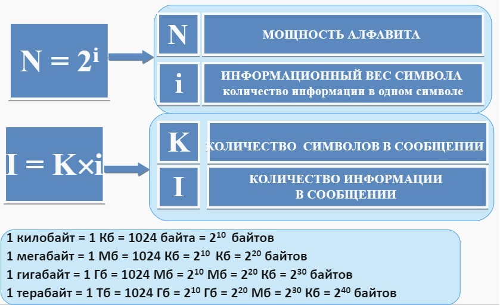
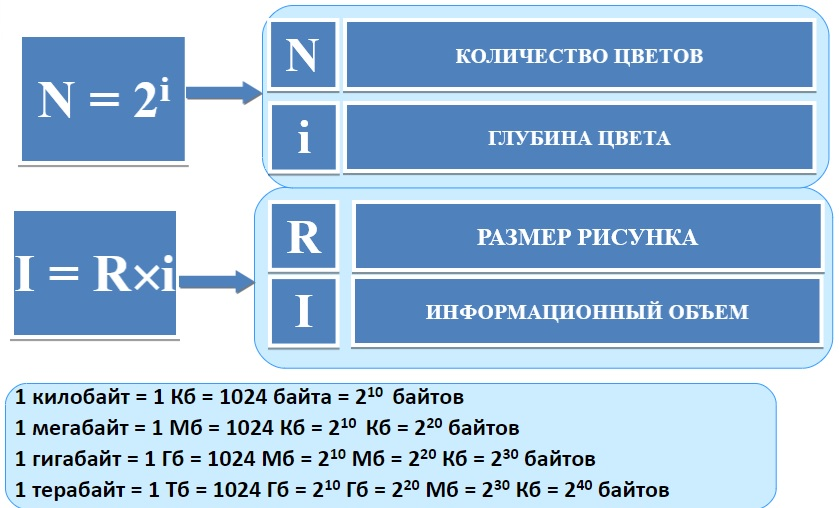
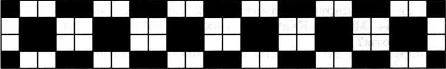

Алфавит любого языка можно заменить двоичным алфавитом. Для кодирования N символов произвольного алфавита требуется i-разрядный двоичный код. Информационный вес символа = разрядность двоичного кода. Мощность алфавита и информационный вес символа алфавита: N=2^i
Информационный объем сообщения (количество информации в сообщениии), представленного символами естественного и формального языка, складывается из информационных весов составляющих его символов. Информационный объем сообщения I равен произведению количества символов в сообщении k на информационный вес символа алфавита i: I=k*i
Босова, электронное приложение к учебнику

Задание 1:
Алфавит племени Пульти содержит 16 символов. Каков информационный вес символа этого алфавита?
Ответ:
Задание 2:
Сообщение, записанное буквами 32-символьного алфавита, содержит 125 символов. Какое количество информации оно несёт? Ответ дайте в битах.
Ответ:
Задание 3:
Информационное сообщение объёмом 640 битов состоит из 160 символов. Какова мощность алфавита, с помощью которого записано это сообщение?
Ответ:
Задание 4:
Для записи текста использовался 64-символьный алфавит. Какой объём информации в байтах содержат 10 страниц текста, если на каждой странице расположено 16 строк по 16 символа в строке?
Ответ:
Задание 5:
Информационный объём сообщения равен 4 Кб. Информационный вес символа – 32 бита. Сколько символов содержит сообщение?
Ответ:
Задание 6:
Сколько килобайт составит сообщение из 4096 символов 16-символьного алфавита?
Ответ:
Задание 7:
Жители планеты ЛИ-32 отправили на Землю сообщение, записанное с помощью всех символов используемого ими алфавита: DADWSDA! Определите информационный объем этого сообщения. Ответ дайте в байтах.
Ответ:
Изображение на экране монитора формируется из отдельных точек - пикселей. Пространственное разрешение монитора - этоколичество пикселей, из которых складывается изображение.
Глубина цвета - длина двоичного кода, который используется для кодирования цвета пикселя. Количество цветов N в палитре и глубина i цвета связаны между собой соотношением: N=2^i
Босова, электронное приложение к учебнику

Задание 1:
Для хранения растрового изображения размером 128*64 пикселей отвели 4 килобайта памяти. Каково максимально возможное число цветов в палитре изображения?
Ответ:
Задание 2:
Растровый газетный рисунок состоит из точек четырех цветов: черного, темно-серого, светло-серого, белого. Сколько битов понадобится для двоичного кодирования одного пикселя этого рисунка?
Ответ:
Задание 3:
Для кодирования одного пикселя используется 3 байта. Фотографию размером 2048*1024 пикселей сохранили в виде несжатого файла. Определите размер получившегося файла в Мбайтах.
Ответ:
Задание 4:
Несжатое растровое изображение размером
128*256 пикселей занимает 4 Кб памяти.Каково максимально возможное число цветов в палитре изображения?
Ответ:
Задание 5:
Дисплей работает с 256-цветной палитрой в режиме 64*40 пикселей. Для кодирования изображения требуется 125 Кбайт. Сколько страниц видеопамяти оно занимает?
Ответ:
Задание 6:
Рассчитайте объём видеопамяти, необходимой для хранения графического изображения, занимающего весь экран монитора с разрешением 640*480 и палитрой из 65 536 цветов. Ответ дайте в Кбайтах.
Ответ:
Задание 7:
Вычислите объём чёрно-белого изображения в байтах, если одна клетка на рисунке соответствует одному пикселю.

Ответ:
Щекотихина Юлия Денисовна, группа 10и2
Сайт создан для творческого проекта по информатике